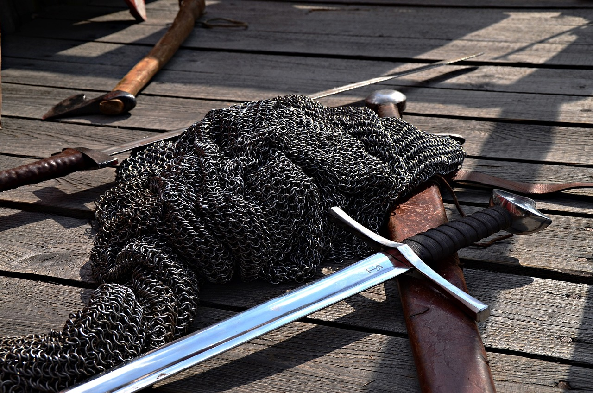
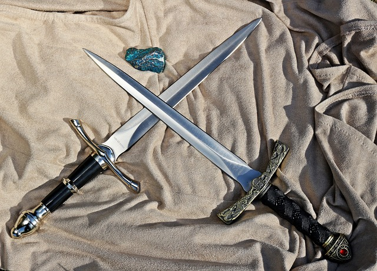

La forja de los dioses
El lugar donde nacen las armas para los grandes guerreros

Hachas, el arma bárbara
El arma preferida para aquellos que prefieren la fuerza en combate.

Espadas, el arma noble.
El arma preferida de la mayoria de los guerreros.
Cuchillos, el arma silenciosa
El arma predilecta para aquellos que prefieren evitar las grandes confrontaciones.
Hachas
Las hachas de guerra han sido instrumentos letales utilizados en combate a lo largo de la historia, tanto por los vikingos como durante la Edad Media. Estas armas se destacaban por su versatilidad y brutalidad en el campo de batalla.
Los vikingos, guerreros nórdicos feroces, empleaban hachas de guerra de doble filo que les permitían realizar rápidos ataques y cambios de dirección. Estas hachas tenían mangos de madera y cabezas de hierro, y se empleaban tanto en ataques cuerpo a cuerpo como en arrojadizas.
En la Edad Media, las hachas de guerra evolucionaron para adaptarse a las necesidades cambiantes del combate. Los caballeros y soldados de infantería usaban hachas de batalla con una sola hoja curvada en un lado y un martillo en el otro, lo que les proporcionaba opciones tanto para cortar como para aplastar a sus oponentes.
Estas hachas se convirtieron en armas temibles en el campo de batalla debido a su capacidad para penetrar armaduras y causar daños graves con un solo golpe. A lo largo de los siglos, las hachas de guerra dejaron su huella en la historia militar, siendo símbolos de fuerza y valentía en manos de los guerreros que luchaban por la gloria y el honor.Las hachas de guerra eran temidas por su efectividad en el combate cuerpo a cuerpo. Su diseño compacto y letal las hizo armas preferidas en batallas campales y asedios. Tanto vikingos como soldados medievales apreciaban su poder destructivo y facilidad de uso. Estas hachas también eran símbolos de estatus y honor en las culturas guerreras. Los vikingos adornaban sus hachas con intrincados grabados, mientras que los caballeros medievales las portaban con orgullo como parte de su armamento. Aunque con el tiempo las tácticas y tecnologías de guerra cambiaron, las hachas de guerra dejaron un legado perdurable, recordándonos su impacto en la historia bélica de la humanidad.Espadas
Las espadas son armas antiguas que han desempeñado un papel crucial en la historia de la humanidad. A lo largo de los siglos, diferentes culturas y regiones han desarrollado una amplia variedad de espadas, cada una con sus propias características únicas y propósitos de combate.
En Europa, las espadas medievales son icónicas y variaban en diseño según la región y el período histórico. Las espadas vikingas, por ejemplo, eran conocidas por su hoja de doble filo y una forma distintiva, mientras que las espadas de los caballeros medievales solían ser más pesadas y robustas, diseñadas para atravesar las armaduras de sus oponentes.
En Oriente, las katanas japonesas se destacaron como armas emblemáticas de los samuráis. Estas espadas de un solo filo eran conocidas por su agudo filo y su capacidad para realizar cortes precisos. Además, las katanas se consideraban símbolos de honor y prestigio en la cultura japonesa.
Por otro lado, en la India, las espadas como la Khanda eran reverenciadas como símbolos de poder y espiritualidad. La Khanda tenía una hoja amplia con una curvatura en la punta y solía usarse en combinación con técnicas de lucha a dos manos.
En el Medio Oriente, el sable se convirtió en un arma icónica, especialmente en la región de Persia (actual Irán). Los sables persas se caracterizaban por su hoja curva y afilada, ideales para ataques rápidos y efectivos.
En África, las tribus Masai de África Oriental eran conocidas por sus letales espadas rústicas, mientras que en la región oeste del continente, las espadas como el cimitarra eran populares entre los guerreros árabes y bereberes.
En China, la espada Jian se consideraba una obra de arte. Su diseño delgado y afilado la hacía perfecta para ataques rápidos y movimientos precisos en la lucha cuerpo a cuerpo.
A medida que la tecnología y las técnicas de fabricación avanzaron, también lo hicieron las espadas. Con la llegada de la metalurgia y la forja de acero, las hojas se volvieron más resistentes y afiladas, lo que llevó a la creación de espadas más efectivas en combate.
En resumen, las espadas han sido parte integral de la historia global de la guerra y el combate. Cada tipo de espada ha sido forjada con habilidad y dedicación, representando tanto la cultura como las necesidades de los guerreros que las empuñaron. Su legado perdura hasta nuestros días, recordándonos la importancia histórica y cultural que estas armas alguna vez tuvieron en el mundo.
Dagas
Las dagas de combate y asesinato han sido armas históricamente temidas y veneradas por su letalidad y versatilidad. Estas hojas afiladas de dimensiones reducidas se convierten en herramientas esenciales tanto para guerreros como para asesinos, que confían en su agilidad y discreción para enfrentar situaciones de peligro extremo.
A lo largo de la historia, las dagas han evolucionado en distintas culturas, adoptando diferentes formas y diseños, cada uno adaptado a las necesidades y estilos de combate únicos de sus usuarios. Su tamaño compacto las hace ideales para maniobras rápidas y precisas, permitiendo que los guerreros se enfrenten en distancias cercanas y confinadas donde otras armas podrían no ser efectivas.
En el contexto del sigilo y el asesinato, las dagas se convierten en aliados silenciosos y mortales. Su capacidad para ser ocultadas con facilidad facilita ataques sorpresa, lo que las hace preferidas entre los asesinos y espías a lo largo de la historia. Su presencia ha sido protagonista en numerosos relatos y leyendas, simbolizando peligro y traición en manos de villanos y antihéroes.
Aunque su uso en el campo de batalla ha disminuido con la aparición de armas de fuego más letales, las dagas de combate y asesinato aún mantienen un lugar en el folclore moderno y en la representación artística, recordándonos su impacto histórico y su persistente presencia en la cultura popular. Su misterio y poder letal continúan fascinando a muchos, haciendo que estas pequeñas pero mortales hojas sigan siendo objeto de interés y estudio en la actualidad.